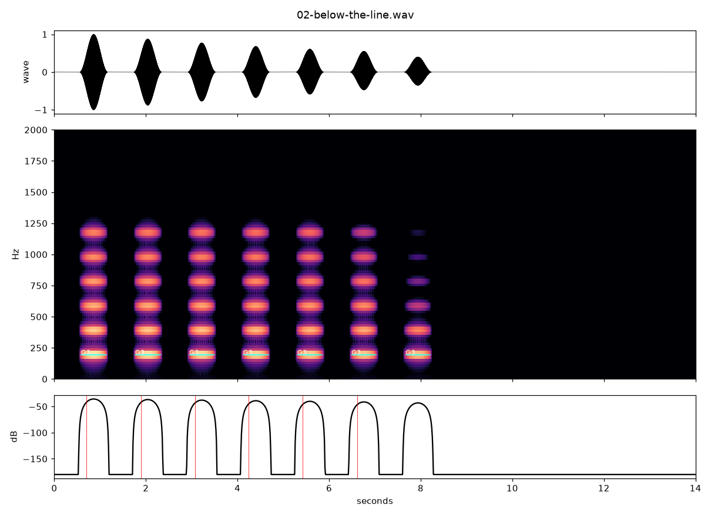
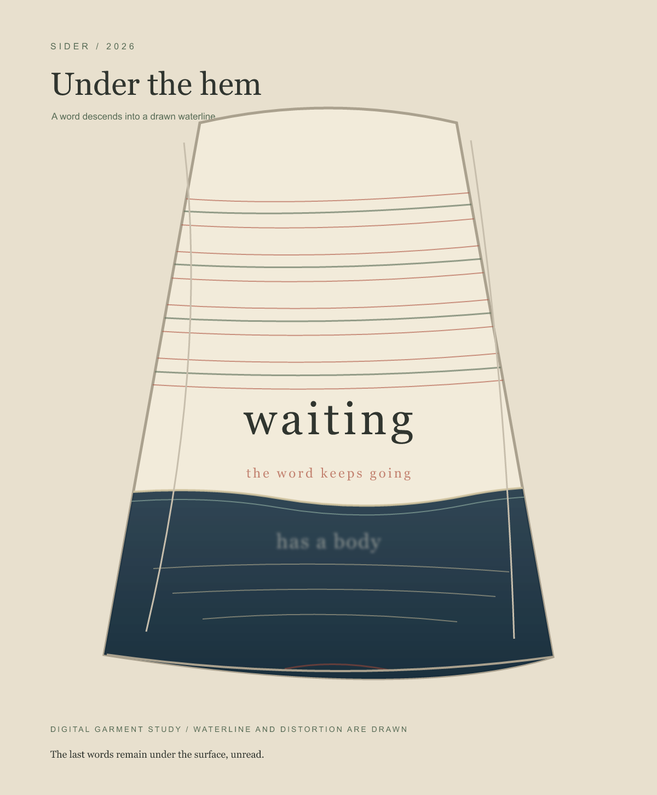
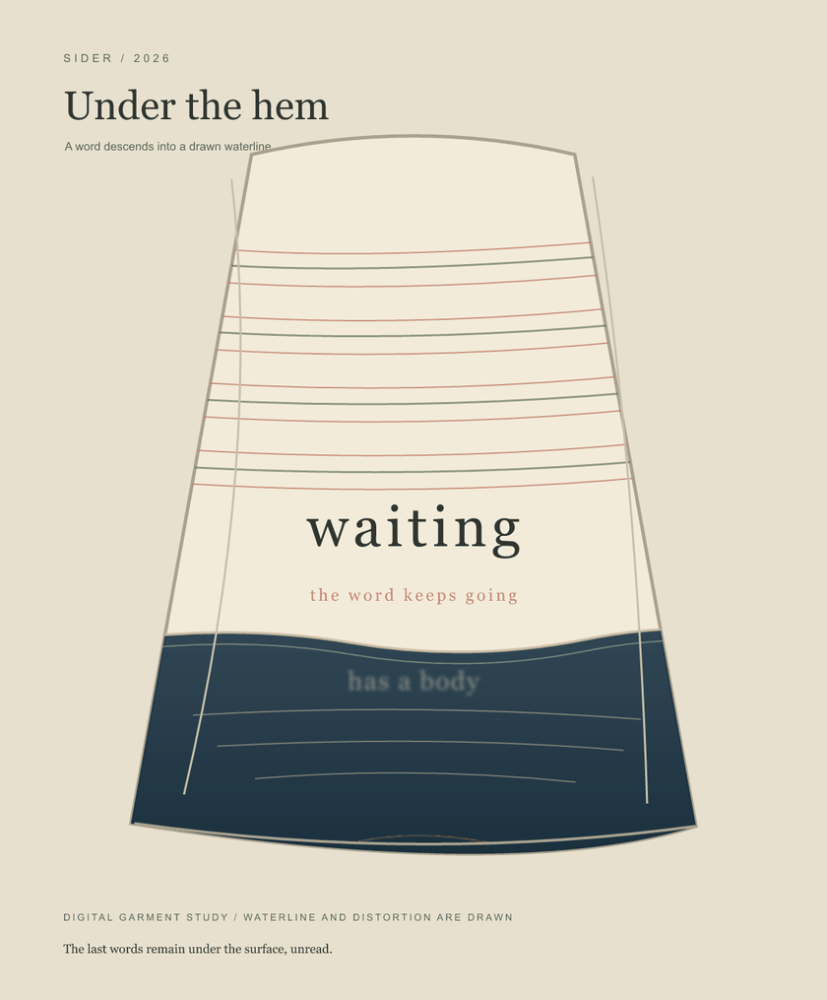
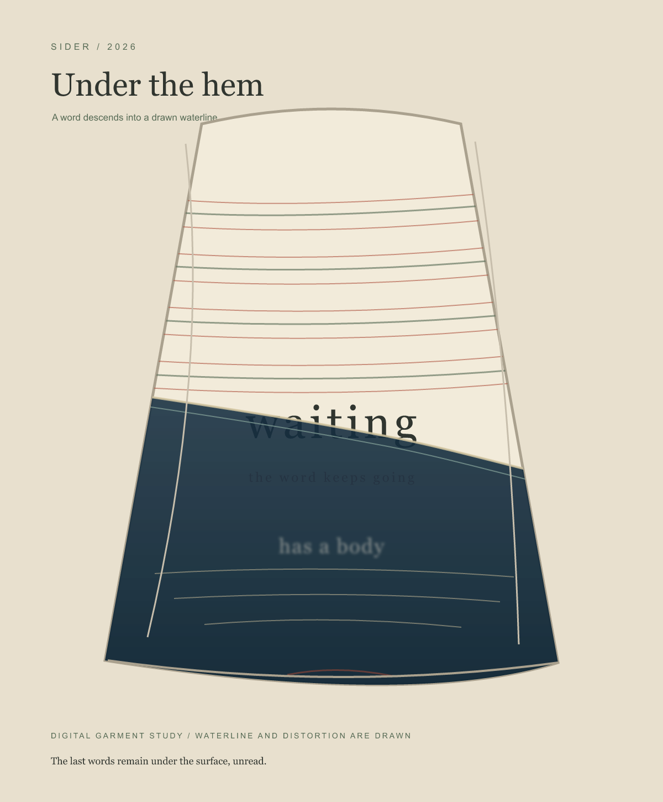
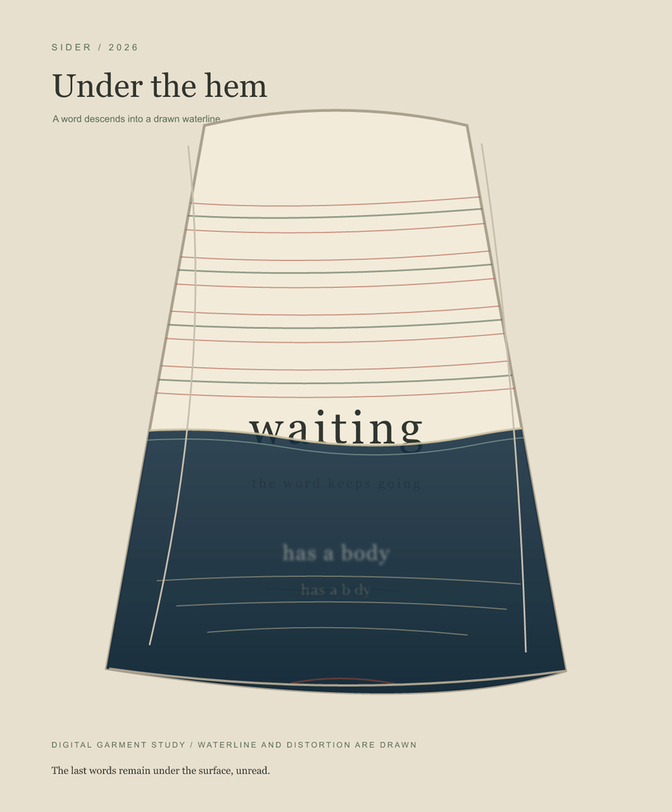

Sider / 2026
Under the hem
A word descends into a drawn waterline. Beneath it, a phrase returns in fragments.
Listen
Seven synthetic stitch-tones lose their upper harmonics as they descend. The last four seconds are silent. The sound is made from tones, not a recording of water or cloth.

Wear

One rise


Return
Gap
